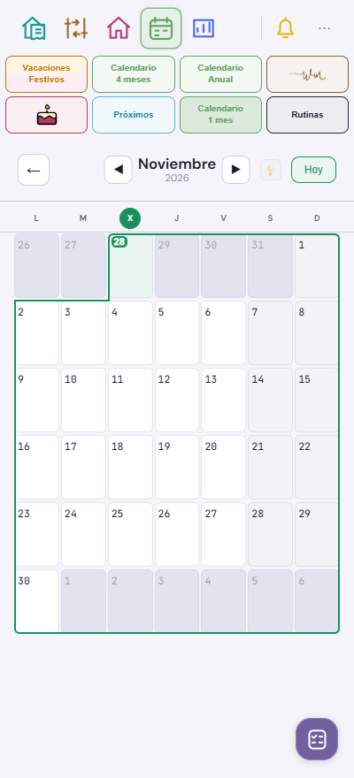

Comprobado en tres anchos de móvil, Claro, Oscuro y Crema, incluyendo fines de semana y el cambio de año. Los meses que no muestran hoy conservan la cabecera sin resaltar.
Ejemplo de la interfaz real: hoy es miércoles 28 de octubre y se está consultando noviembre. La celda de hoy mantiene el fondo verde y su número sin atenuar. La X de la cabecera aparece en un círculo verde.
Los demás días del mes anterior siguen apagados. El contorno continuo conserva su recorrido. Ajuste puntual: se mantienen las capturas anteriores del atlas.

Comprobado en tres anchos de móvil, Claro, Oscuro y Crema, incluyendo fines de semana y el cambio de año. Los meses que no muestran hoy conservan la cabecera sin resaltar.